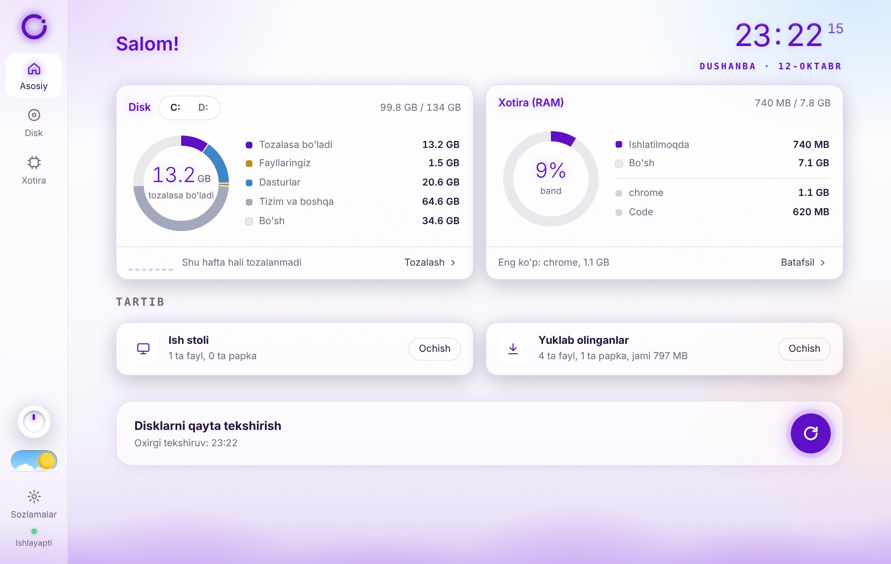
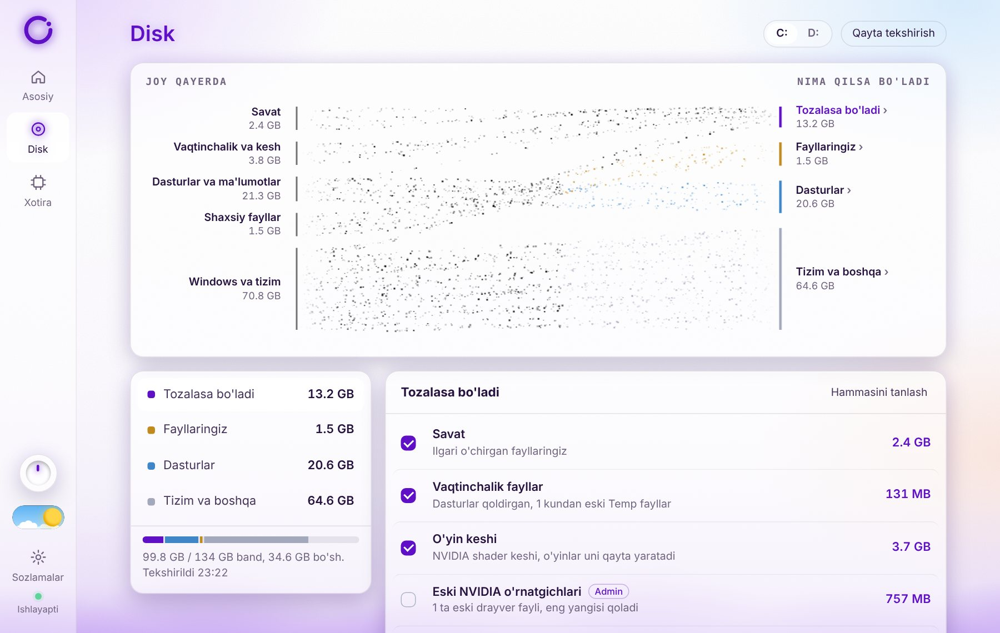

<title>Orvel</title>
<link rel="preconnect" href="https://fonts.googleapis.com">
<link rel="preconnect" href="https://fonts.gstatic.com" crossorigin>
<link rel="stylesheet" href="https://fonts.googleapis.com/css2?family=Unbounded:wght@500;600&family=Onest:wght@400;500;600&family=JetBrains+Mono:wght@500&display=swap">
<style>
/* Layout: one calm column; lavender mist rises from the bottom of the hero and the footer, like the ad. */
:root {
  --bg: #FFFFFF;
  --bg-2: #F8F5FF;
  --ink: #24104F;
  --ink-2: #5B4E78;
  --line: rgba(36, 16, 79, .10);
  --violet: #8D3FF3;
  --violet-deep: #6A1FD0;
  --on-violet: #FFFFFF;
  --mist: rgba(155, 110, 245, .55);
  --peach: rgba(255, 196, 160, .45);
  --sky: rgba(160, 205, 255, .5);
  --card: rgba(255, 255, 255, .78);
  --shadow: 0 24px 60px rgba(90, 50, 180, .14);
  --display: "Unbounded", "Segoe UI", system-ui, sans-serif;
  --body: "Onest", "Segoe UI", system-ui, sans-serif;
  --mono: "JetBrains Mono", Consolas, monospace;
}
@media (prefers-color-scheme: dark) {
  :root:not([data-theme="light"]) {
    --bg: #0F0A1C; --bg-2: #160F28; --ink: #EEE8FF; --ink-2: #ADA2C8; --line: rgba(238, 232, 255, .10);
    --violet: #A774FF; --violet-deep: #C3A0FF; --on-violet: #14082B;
    --mist: rgba(130, 80, 240, .45); --peach: rgba(255, 150, 120, .16); --sky: rgba(90, 140, 255, .18);
    --card: rgba(30, 20, 52, .72); --shadow: 0 24px 60px rgba(0, 0, 0, .45); color-scheme: dark;
  }
}
:root[data-theme="dark"] {
  --bg: #0F0A1C; --bg-2: #160F28; --ink: #EEE8FF; --ink-2: #ADA2C8; --line: rgba(238, 232, 255, .10);
  --violet: #A774FF; --violet-deep: #C3A0FF; --on-violet: #14082B;
  --mist: rgba(130, 80, 240, .45); --peach: rgba(255, 150, 120, .16); --sky: rgba(90, 140, 255, .18);
  --card: rgba(30, 20, 52, .72); --shadow: 0 24px 60px rgba(0, 0, 0, .45); color-scheme: dark;
}

* { box-sizing: border-box; }
html { scroll-behavior: smooth; }
body { margin: 0; background: var(--bg); color: var(--ink); font: 400 17px/1.6 var(--body); -webkit-font-smoothing: antialiased; overflow-x: hidden; }
a { color: inherit; }
img, video { max-width: 100%; display: block; }
.wrap { width: 100%; max-width: 1120px; margin: 0 auto; padding-inline: 20px; }
h1, h2, h3 { font-family: var(--display); font-weight: 600; letter-spacing: -0.02em; text-wrap: balance; margin: 0; }
p { margin: 0; }
:focus-visible { outline: 3px solid var(--violet); outline-offset: 3px; border-radius: 8px; }

/* header */
.top { position: sticky; top: env(safe-area-inset-top, 0px); z-index: 10; backdrop-filter: blur(14px); -webkit-backdrop-filter: blur(14px);
  background: color-mix(in srgb, var(--bg) 72%, transparent); border-bottom: 1px solid var(--line); }
.top .wrap { display: flex; align-items: center; gap: 24px; padding-block: 14px; }
.brand { display: flex; align-items: center; gap: 10px; text-decoration: none; font-family: var(--display); font-weight: 600; font-size: 22px; letter-spacing: -0.04em; }
.brand svg { width: 30px; height: 30px; }
.top nav { display: flex; gap: 22px; margin-left: auto; font-size: 15px; }
.top nav a { text-decoration: none; color: var(--ink-2); }
.top nav a:hover { color: var(--ink); }
.langs { display: flex; border: 1px solid var(--line); border-radius: 999px; padding: 3px; background: var(--card); }
.langs button { font: 500 13px var(--body); color: var(--ink-2); border: 0; background: none; padding: 5px 11px; border-radius: 999px; cursor: pointer; }
.langs button[aria-pressed="true"] { background: var(--ink); color: var(--bg); }

/* hero */
.hero { position: relative; overflow: hidden; padding-block: 72px 120px; }
.hero::before { content: ""; position: absolute; inset: 0; z-index: -2;
  background: radial-gradient(40% 50% at 8% 6%, var(--mist), transparent 70%), radial-gradient(36% 40% at 96% 8%, var(--sky), transparent 70%),
              radial-gradient(34% 36% at 98% 70%, var(--peach), transparent 70%); opacity: .55; }
.mist { position: absolute; left: -8%; right: -8%; bottom: -70px; height: 240px; z-index: -1; filter: blur(34px); pointer-events: none;
  background: radial-gradient(18% 55% at 8% 70%, var(--mist), transparent 72%), radial-gradient(18% 62% at 28% 62%, var(--mist), transparent 72%),
              radial-gradient(20% 52% at 50% 72%, var(--mist), transparent 72%), radial-gradient(18% 60% at 72% 62%, var(--mist), transparent 72%),
              radial-gradient(18% 55% at 92% 70%, var(--mist), transparent 72%), linear-gradient(0deg, var(--mist) 35%, transparent);
  animation: drift 14s ease-in-out infinite alternate; }
@keyframes drift { to { transform: translateX(3%) translateY(-8px); } }
.hero .wrap { display: grid; grid-template-columns: minmax(0, 5fr) minmax(0, 6fr); gap: 56px; align-items: center; }
.eyebrow { font: 500 13px var(--mono); letter-spacing: .14em; text-transform: uppercase; color: var(--violet-deep); }
.hero h1 { font-size: clamp(40px, 5.6vw, 68px); line-height: 1.04; margin-top: 18px; }
.hero h1 em { font-style: normal; color: var(--violet); }
.lead { font-size: 19px; color: var(--ink-2); margin-top: 22px; max-width: 34em; }
.cta { display: flex; flex-wrap: wrap; gap: 12px; margin-top: 32px; }
.btn { display: inline-flex; align-items: center; gap: 10px; font: 600 16px var(--body); text-decoration: none; border-radius: 999px; padding: 15px 24px; border: 1px solid transparent; cursor: pointer; }
.btn-main { background: var(--violet); color: var(--on-violet); box-shadow: 0 10px 30px color-mix(in srgb, var(--violet) 40%, transparent); }
.btn-main[aria-disabled="true"] { cursor: default; }
.btn-main .soon { font: 500 12px var(--mono); padding: 3px 8px; border-radius: 999px; background: color-mix(in srgb, var(--on-violet) 22%, transparent); }
.btn-ghost { background: var(--card); color: var(--ink); border-color: var(--line); }
.facts { display: flex; flex-wrap: wrap; gap: 8px 18px; margin-top: 22px; font-size: 14px; color: var(--ink-2); }
.facts span { display: inline-flex; align-items: center; gap: 7px; }
.facts span::before { content: ""; width: 6px; height: 6px; border-radius: 50%; background: var(--violet); }

.shot { position: relative; }
.frame { border-radius: 16px; overflow: hidden; border: 1px solid var(--line); box-shadow: var(--shadow); background: var(--card); }
.frame .bar { display: flex; align-items: center; gap: 7px; padding: 10px 14px; border-bottom: 1px solid var(--line); font: 500 12px var(--mono); color: var(--ink-2); }
.frame .bar i { width: 10px; height: 10px; border-radius: 50%; background: var(--line); }
.frame .bar b { margin-left: 8px; font-weight: 500; }
.frame img { width: 100%; height: auto; aspect-ratio: 1200 / 760; object-fit: cover; }
.chip { position: absolute; left: -22px; bottom: 34px; display: flex; flex-direction: column; gap: 2px; padding: 14px 18px; border-radius: 14px;
  background: var(--card); border: 1px solid var(--line); box-shadow: var(--shadow); backdrop-filter: blur(10px); }
.chip strong { font: 500 26px var(--mono); color: var(--violet); font-variant-numeric: tabular-nums; }
.chip small { font-size: 13px; color: var(--ink-2); }

/* sections */
section { padding-block: 88px; }
.sec-head { max-width: 640px; display: grid; gap: 14px; margin-bottom: 44px; }
.sec-head h2 { font-size: clamp(28px, 3.4vw, 40px); line-height: 1.12; }
.sec-head p { color: var(--ink-2); }

.video { background: var(--bg-2); }
.video .player { border-radius: 18px; overflow: hidden; box-shadow: var(--shadow); border: 1px solid var(--line); background: #000; max-width: 960px; }
.video video { width: 100%; aspect-ratio: 16 / 9; }

.feats { display: grid; grid-template-columns: repeat(3, minmax(0, 1fr)); gap: 18px; }
.feat { padding: 26px; border-radius: 18px; border: 1px solid var(--line); background: var(--card); display: grid; gap: 10px; align-content: start; }
.feat svg { width: 34px; height: 34px; color: var(--violet); }
.feat h3 { font-size: 18px; line-height: 1.3; }
.feat p { color: var(--ink-2); font-size: 15.5px; }
.feat code { font: 500 12.5px var(--mono); color: var(--violet-deep); background: color-mix(in srgb, var(--violet) 9%, transparent); padding: 6px 9px; border-radius: 8px; justify-self: start; overflow-wrap: anywhere; }

.split { display: grid; grid-template-columns: minmax(0, 7fr) minmax(0, 4fr); gap: 48px; align-items: center; }
.split .sec-head { margin: 0; }

.steps { display: grid; grid-template-columns: repeat(3, minmax(0, 1fr)); gap: 18px; counter-reset: s; }
.step { position: relative; padding: 26px 26px 26px 26px; border-top: 2px solid var(--violet); background: var(--bg-2); border-radius: 0 0 16px 16px; display: grid; gap: 8px; align-content: start; }
.step::before { counter-increment: s; content: counter(s); font: 600 15px var(--display); color: var(--violet); }
.step h3 { font-size: 17px; }
.step p { color: var(--ink-2); font-size: 15.5px; }
.step kbd { font: 500 13px var(--mono); padding: 2px 7px; border-radius: 6px; border: 1px solid var(--line); background: var(--bg); white-space: nowrap; }

.faq { display: grid; gap: 10px; max-width: 820px; }
details { border: 1px solid var(--line); border-radius: 14px; background: var(--card); }
summary { cursor: pointer; list-style: none; padding: 18px 22px; font-weight: 600; display: flex; justify-content: space-between; gap: 16px; }
summary::-webkit-details-marker { display: none; }
summary::after { content: "+"; font: 500 20px var(--mono); color: var(--violet); line-height: 1; }
details[open] summary::after { content: "–"; }
details p { padding: 0 22px 20px; color: var(--ink-2); }

footer { position: relative; overflow: hidden; padding-block: 80px 110px; text-align: left; }
footer .wrap { display: grid; gap: 18px; }
footer .big { font-family: var(--display); font-weight: 600; font-size: clamp(30px, 4vw, 48px); letter-spacing: -0.03em; }
footer .meta { display: flex; flex-wrap: wrap; gap: 8px 22px; color: var(--ink-2); font-size: 14px; }
footer .meta span:first-child { font-family: var(--mono); }
footer .studio { display: flex; align-items: center; gap: 10px; font-size: 18px; color: var(--ink-2); }
footer .studio em { font-style: normal; font-size: 14px; }
footer .studio .labs { font-family: var(--mono, ui-monospace, Consolas, monospace); font-size: 10px; font-weight: 600; letter-spacing: .26em; color: var(--bg, #fff); background: var(--ink); border-radius: 999px; padding: 4px 8px 4px 10px; }
footer .studio b { font-family: var(--display); font-weight: 600; letter-spacing: -0.03em; color: var(--ink); }

@media (max-width: 900px) {
  .hero .wrap, .split { grid-template-columns: minmax(0, 1fr); }
  .feats, .steps { grid-template-columns: minmax(0, 1fr); }
  .top nav { display: none; }
  .langs { margin-left: auto; }
  .chip { left: 12px; bottom: 12px; }
  .hero { padding-block: 44px 100px; }
  section { padding-block: 64px; }
}
@media (prefers-reduced-motion: reduce) { .mist { animation: none; } html { scroll-behavior: auto; } }
</style>

<header class="top">
  <div class="wrap">
    <a class="brand" href="#top" aria-label="Orvel">
      <svg viewBox="22 22 84 84" aria-hidden="true"><circle cx="64" cy="64" r="34" fill="none" stroke="var(--violet)" stroke-width="11" stroke-linecap="round" stroke-dasharray="178 36"/><circle cx="93.4" cy="47" r="6.5" fill="var(--violet)"/></svg>
      orvel
    </a>
    <nav>
      <a href="#imkoniyatlar" data-i="nav.feat"></a>
      <a href="#ornatish" data-i="nav.install"></a>
      <a href="#savollar" data-i="nav.faq"></a>
    </nav>
    <div class="langs" role="group" aria-label="Til / Язык / Language">
      <button type="button" id="l-uz" data-l="uz" aria-pressed="true">UZ</button>
      <button type="button" id="l-ru" data-l="ru" aria-pressed="false">RU</button>
      <button type="button" id="l-en" data-l="en" aria-pressed="false">EN</button>
    </div>
  </div>
</header>

<main id="top">
  <div class="hero">
    <div class="wrap">
      <div>
        <div class="eyebrow" data-i="hero.eyebrow"></div>
        <h1 data-i="hero.title"></h1>
        <p class="lead" data-i="hero.lead"></p>
        <div class="cta">
          <a class="btn btn-main" id="dl" href="https://github.com/zaveronlabs/orvel/releases/latest">
            <svg width="18" height="18" viewBox="0 0 24 24" fill="none" stroke="currentColor" stroke-width="2.2" stroke-linecap="round" stroke-linejoin="round" aria-hidden="true"><path d="M12 4v11M7 10l5 5 5-5M5 20h14"/></svg>
            <span data-i="hero.download"></span><span class="soon">v0.20</span>
          </a>
          <a class="btn btn-ghost" href="#rolik" data-i="hero.watch"></a>
        </div>
        <div class="facts"><span data-i="fact.free"></span><span>Windows 10 · 11</span><span data-i="fact.langs"></span></div>
      </div>
      <div class="shot">
        <div class="frame">
          <div class="bar"><i></i><i></i><i></i><b>Orvel</b></div>
          
        </div>
        <div class="chip"><strong>13,2 GB</strong><small data-i="hero.chip"></small></div>
      </div>
    </div>
    <div class="mist" aria-hidden="true"></div>
  </div>

  <section class="video" id="rolik">
    <div class="wrap">
      <div class="sec-head"><h2 data-i="video.title"></h2><p data-i="video.text"></p></div>
      <div class="player"><video id="vid" src="orvel_reklama.mp4" poster="poster.jpg" controls muted playsinline preload="metadata"></video></div>
    </div>
  </section>

  <section id="imkoniyatlar">
    <div class="wrap">
      <div class="sec-head"><h2 data-i="feat.title"></h2><p data-i="feat.text"></p></div>
      <div class="feats">
        <article class="feat">
          <svg viewBox="0 0 24 24" fill="none" stroke="currentColor" stroke-width="1.8" stroke-linecap="round" aria-hidden="true"><path d="M3 6c6 0 6 6 12 6h6M3 12h18M3 18c6 0 6-6 12-6"/></svg>
          <h3 data-i="f1.t"></h3><p data-i="f1.p"></p><code data-i="f1.c"></code>
        </article>
        <article class="feat">
          <svg viewBox="0 0 24 24" fill="none" stroke="currentColor" stroke-width="1.8" stroke-linecap="round" stroke-linejoin="round" aria-hidden="true"><path d="M4 7h16M9 7V4h6v3M6 7l1 13h10l1-13"/></svg>
          <h3 data-i="f2.t"></h3><p data-i="f2.p"></p><code>Savat · Temp · DXCache · hiberfil.sys</code>
        </article>
        <article class="feat">
          <svg viewBox="0 0 24 24" fill="none" stroke="currentColor" stroke-width="1.8" stroke-linecap="round" stroke-linejoin="round" aria-hidden="true"><path d="M12 3l8 3v6c0 4.5-3.4 8-8 9-4.6-1-8-4.5-8-9V6z"/><path d="M8.5 12l2.5 2.5 4.5-5"/></svg>
          <h3 data-i="f3.t"></h3><p data-i="f3.p"></p><code data-i="f3.c"></code>
        </article>
        <article class="feat">
          <svg viewBox="0 0 24 24" fill="none" stroke="currentColor" stroke-width="1.8" stroke-linecap="round" aria-hidden="true"><path d="M2 9a15 15 0 0 1 20 0M5 12.5a10 10 0 0 1 14 0M8.5 16a5 5 0 0 1 7 0"/><path d="M3 3l18 18"/></svg>
          <h3 data-i="f4.t"></h3><p data-i="f4.p"></p><code>127.0.0.1</code>
        </article>
        <article class="feat">
          <svg viewBox="0 0 24 24" fill="none" stroke="currentColor" stroke-width="1.8" stroke-linecap="round" stroke-linejoin="round" aria-hidden="true"><path d="M6 16V11a6 6 0 0 1 12 0v5l2 2H4z"/><path d="M10 21h4"/></svg>
          <h3 data-i="f5.t"></h3><p data-i="f5.p"></p><code data-i="f5.c"></code>
        </article>
        <article class="feat">
          <svg viewBox="0 0 24 24" fill="none" stroke="currentColor" stroke-width="1.8" aria-hidden="true"><circle cx="8" cy="9" r="3.2"/><circle cx="16" cy="9" r="3.2"/><circle cx="12" cy="15.5" r="3.2"/></svg>
          <h3 data-i="f6.t"></h3><p data-i="f6.p"></p><code data-i="f6.c"></code>
        </article>
      </div>
    </div>
  </section>

  <section class="video">
    <div class="wrap split">
      <div class="frame"><div class="bar"><i></i><i></i><i></i><b>Orvel · Disk</b></div></div>
      <div class="sec-head"><h2 data-i="disk.title"></h2><p data-i="disk.text"></p></div>
    </div>
  </section>

  <section id="ornatish">
    <div class="wrap">
      <div class="sec-head"><h2 data-i="inst.title"></h2><p data-i="inst.text"></p></div>
      <div class="steps">
        <div class="step"><h3 data-i="s1.t"></h3><p data-i="s1.p"></p></div>
        <div class="step"><h3 data-i="s2.t"></h3><p data-i="s2.p"></p></div>
        <div class="step"><h3 data-i="s3.t"></h3><p data-i="s3.p"></p></div>
      </div>
    </div>
  </section>

  <section id="savollar" class="video">
    <div class="wrap">
      <div class="sec-head"><h2 data-i="faq.title"></h2></div>
      <div class="faq">
        <details><summary data-i="q1"></summary><p data-i="a1"></p></details>
        <details><summary data-i="q2"></summary><p data-i="a2"></p></details>
        <details><summary data-i="q3"></summary><p data-i="a3"></p></details>
        <details><summary data-i="q4"></summary><p data-i="a4"></p></details>
        <details><summary data-i="q5"></summary><p data-i="a5"></p></details>
      </div>
    </div>
  </section>
</main>

<footer>
  <div class="wrap">
    <div class="big" data-i="foot.big"></div>
    <div class="studio" aria-label="Orvel by Zaveron Labs">
      <span>orvel <em>by</em></span>
      <svg viewBox="0 0 100 100" width="30" height="30" aria-hidden="true"><path d="M4 50 L27 10 H73 L96 50 L73 90 H27 Z" style="fill:var(--violet)" style="stroke:var(--violet)" stroke-width="6" stroke-linejoin="round"/><g fill="none" stroke="#FFFFFF" stroke-linecap="round" stroke-width="9"><path d="M32 33 H68"/><path d="M68 33 L32 67" opacity=".55"/><path d="M32 67 H68"/></g><circle cx="68" cy="33" r="6.5" style="fill:#1B1030"/><circle cx="32" cy="67" r="6.5" style="fill:#1B1030"/></svg><svg viewBox="-10 -40 6421 820" height="21" aria-hidden="true"><g transform="translate(42 0)"><g fill="none" stroke-linecap="round" stroke-width="170"><path d="M95 95 H629" style="stroke:var(--violet)"/><path d="M629 95 L95 655" style="stroke:var(--violet)" opacity=".42"/><path d="M95 655 H629" style="stroke:var(--violet)"/></g><circle cx="629" cy="95" r="98" style="fill:var(--ink)"/><circle cx="95" cy="655" r="98" style="fill:var(--ink)"/></g><g transform="translate(4481.0 -16)"><path d="M95 391 L282 95 H609 L796 391 L609 687 H282 Z" fill="none" style="stroke:var(--violet)" stroke-width="170" stroke-linejoin="round"/></g><path d="M1044.0 606.0V439.0H1561.0V606.0ZM1443.0 0.0 1784.0 750.0H1563.0L1277.0 88.0H1337.0L1050.0 750.0H829.0L1170.0 0.0Z M2319.0 657.0H2231.0L2520.0 0.0H2739.0L2390.0 750.0H2155.0L1806.0 0.0H2028.0Z M3471.0 300.0V450.0H2922.0V300.0ZM3063.0 375.0 3014.0 676.0 2930.0 582.0H3504.0V750.0H2807.0L2864.0 375.0L2807.0 0.0H3499.0V168.0H2930.0L3014.0 74.0Z M3787.0 328.0H4060.0Q4110.0 328.0 4138.0 305.0Q4166.0 282.0 4166.0 241.0Q4166.0 199.0 4138.0 176.5Q4110.0 154.0 4060.0 154.0H3758.0L3851.0 55.0V750.0H3644.0V0.0H4089.0Q4175.0 0.0 4239.0 30.5Q4303.0 61.0 4339.0 114.5Q4375.0 168.0 4375.0 241.0Q4375.0 312.0 4339.0 366.0Q4303.0 420.0 4239.0 450.0Q4175.0 480.0 4089.0 480.0H3787.0ZM3899.0 399.0H4132.0L4401.0 750.0H4161.0Z M6194.0 605.0 6130.0 618.0V0.0H6331.0V750.0H6070.0L5637.0 133.0L5700.0 120.0V750.0H5499.0V0.0H5767.0Z" style="fill:var(--ink)"/></svg>
      <span class="labs">LABS</span>
    </div>
    <div class="meta"><span>orvel v0.20</span><span data-i="foot.local"></span><span data-i="foot.made"></span></div>
  </div>
  <div class="mist" aria-hidden="true"></div>
</footer>

<script>
const T = {
  uz: {
    "nav.feat": "Imkoniyatlar", "nav.install": "O‘rnatish", "nav.faq": "Savollar",
    "hero.eyebrow": "Windows uchun disk yordamchisi",
    "hero.title": "Diskingiz <em>nazoratda</em>.",
    "hero.lead": "Orvel diskingizni nima egallab olganini bir qarashda ko‘rsatadi va keraksiz fayllarni bir bosishda, xavfsiz tozalaydi.",
    "hero.download": "Windows uchun yuklab olish", "hero.soon": "tez orada", "hero.watch": "Rolikni ko‘rish",
    "hero.chip": "tozalasa bo‘ladi",
    "fact.free": "Bepul", "fact.langs": "O‘zbekcha · Русский · English",
    "video.title": "25 soniyada Orvel bilan tanishing", "video.text": "Disk to‘lib qolsa nima qilish kerakligini Orvel o‘zi ko‘rsatadi.",
    "feat.title": "Kerakli hamma narsa, ortiqchasi yo‘q", "feat.text": "Orvel bitta ishni yaxshi bajaradi: diskingizni tartibda saqlaydi.",
    "f1.t": "Joy qayerga ketganini ko‘ring", "f1.p": "Zarrachali oqim grafigi diskni bo‘laklarga ajratadi: sizning fayllaringiz, dasturlar, tizim va tozalasa bo‘ladigan qism.", "f1.c": "Fayllaringiz · Dasturlar · Tizim",
    "f2.t": "Bir bosishda tozalang", "f2.p": "Savat, eski vaqtinchalik fayllar, o‘yin keshi va boshqa keraksiz narsalar. Nima o‘chishini oldindan ko‘rasiz.",
    "f3.t": "Siz rozi bo‘lmaguncha hech narsa o‘chmaydi", "f3.p": "Shaxsiy fayllaringizga Orvel tegmaydi. Ishlab turgan dasturlarning fayllari ham o‘tkazib yuboriladi.", "f3.c": "Faqat 1 kundan eski Temp fayllar",
    "f4.t": "Internet kerak emas", "f4.p": "Hammasi kompyuteringizning ichida ishlaydi. Hech qanday ma’lumot tashqariga yuborilmaydi.",
    "f5.t": "Disk to‘lsa, ogohlantiradi", "f5.p": "Disk belgilangan darajadan ko‘p to‘lsa, Orvel sizga xabar beradi.", "f5.c": "C: 90% → ogohlantirish",
    "f6.t": "Sizning rangingiz", "f6.p": "7 ta tayyor rang yoki o‘zingiz tanlaganingiz, kun va tun rejimi, aylanib almashadigan neon soat.", "f6.c": "Lavanda · Zumrad · Muz · Pushti …",
    "disk.title": "Har bir gigabayt hisobda", "disk.text": "Disk sahifasida qaysi papka qancha joy olganini ko‘rasiz. Tozalasa bo‘ladigan narsalar alohida ro‘yxatda, har biri izohi bilan.",
    "inst.title": "O‘rnatish uchun bir daqiqa", "inst.text": "Yuqoridagi tugma GitHub sahifasini ochadi. U yerdan Orvel_Setup faylini yuklab oling: bepul, ro‘yxatdan o‘tish shart emas.",
    "s1.t": "Yuklab oling", "s1.p": "Orvel_Setup.exe faylini oching va «Next» tugmasi bilan o‘rnating. Ish stolida Orvel belgisi paydo bo‘ladi.",
    "s2.t": "Windows ogohlantirsa", "s2.p": "Yangi dasturlarda Windows «Windows protected your PC» deyishi mumkin. <kbd>More info</kbd>, keyin <kbd>Run anyway</kbd> ni bosing.",
    "s3.t": "Tilni tanlang", "s3.p": "Orvel ochilganda tilni va ismingizni so‘raydi. Keyin diskni o‘zi tekshirib, natijani ko‘rsatadi.",
    "faq.title": "Ko‘p beriladigan savollar",
    "q1": "Orvel bepulmi?", "a1": "Ha, Orvel bepul. Reklama ham, obuna ham yo‘q.",
    "q2": "Muhim fayllarim o‘chib ketmaydimi?", "a2": "Yo‘q. Orvel faqat savat, eski vaqtinchalik fayllar va kesh kabi keraksiz narsalarni taklif qiladi. Hujjat, rasm va videolaringizga tegmaydi, hamma narsa siz bosganingizdan keyingina o‘chiriladi.",
    "q3": "Internet kerakmi?", "a3": "Yo‘q. Orvel to‘liq kompyuteringizda ishlaydi va hech qanday ma’lumotni internetga yubormaydi.",
    "q4": "Nega Windows ogohlantiradi?", "a4": "Orvel yangi dastur va hali raqamli imzosi yo‘q. Windows bunday dasturlarda ogohlantiradi. Bu xavf degani emas: «More info» → «Run anyway» ni bosib ochish mumkin.",
    "q5": "Qanday o‘chirib tashlayman?", "a5": "Windows Sozlamalari → Ilovalar → Orvel → O‘chirish. Orvel o‘zining sozlamalari bilan birga butunlay o‘chadi.",
    "foot.big": "Diskingiz nazoratda.", "foot.local": "Ma’lumotlaringiz kompyuteringizda qoladi.", "foot.made": "O‘zbekistonda yaratildi"
  },
  ru: {
    "nav.feat": "Возможности", "nav.install": "Установка", "nav.faq": "Вопросы",
    "hero.eyebrow": "Помощник для дисков Windows",
    "hero.title": "Ваш диск <em>под контролем</em>.",
    "hero.lead": "Orvel с первого взгляда показывает, что занимает место на диске, и безопасно удаляет ненужные файлы в один клик.",
    "hero.download": "Скачать для Windows", "hero.soon": "скоро", "hero.watch": "Смотреть ролик",
    "hero.chip": "можно очистить",
    "fact.free": "Бесплатно", "fact.langs": "O‘zbekcha · Русский · English",
    "video.title": "Знакомство с Orvel за 25 секунд", "video.text": "Orvel сам подскажет, что делать, когда диск заполнен.",
    "feat.title": "Всё нужное и ничего лишнего", "feat.text": "Orvel делает одно дело хорошо: держит диск в порядке.",
    "f1.t": "Видно, куда ушло место", "f1.p": "Анимированная схема делит диск на части: ваши файлы, программы, система и то, что можно очистить.", "f1.c": "Ваши файлы · Программы · Система",
    "f2.t": "Очистка в один клик", "f2.p": "Корзина, старые временные файлы, кэш игр и прочий мусор. Вы заранее видите, что будет удалено.",
    "f3.t": "Ничего не удаляется без вашего согласия", "f3.p": "Личные файлы Orvel не трогает. Файлы работающих программ тоже пропускаются.", "f3.c": "Только Temp-файлы старше суток",
    "f4.t": "Интернет не нужен", "f4.p": "Всё работает внутри вашего компьютера. Никакие данные никуда не отправляются.",
    "f5.t": "Предупредит, если диск заполнен", "f5.p": "Когда диск заполнится выше заданного уровня, Orvel сообщит об этом.", "f5.c": "C: 90% → предупреждение",
    "f6.t": "Ваш цвет", "f6.p": "7 готовых цветов или свой, дневной и ночной режим, неоновые часы с перелистыванием цифр.", "f6.c": "Лаванда · Изумруд · Лёд · Розовый …",
    "disk.title": "Каждый гигабайт на счету", "disk.text": "На странице «Диск» видно, сколько места занимает каждая папка. То, что можно очистить, собрано в отдельный список с пояснениями.",
    "inst.title": "Установка за минуту", "inst.text": "Кнопка выше откроет страницу на GitHub. Скачайте оттуда файл Orvel_Setup: бесплатно и без регистрации.",
    "s1.t": "Скачайте", "s1.p": "Откройте Orvel_Setup.exe и установите кнопкой «Далее». На рабочем столе появится значок Orvel.",
    "s2.t": "Если Windows предупредит", "s2.p": "Для новых программ Windows может показать «Система Windows защитила ваш компьютер». Нажмите <kbd>Подробнее</kbd>, затем <kbd>Выполнить в любом случае</kbd>.",
    "s3.t": "Выберите язык", "s3.p": "При первом запуске Orvel спросит язык и ваше имя, затем сам проверит диск и покажет результат.",
    "faq.title": "Частые вопросы",
    "q1": "Orvel бесплатный?", "a1": "Да, Orvel бесплатный. Без рекламы и подписок.",
    "q2": "Не удалятся ли важные файлы?", "a2": "Нет. Orvel предлагает только ненужное: корзину, старые временные файлы и кэш. Документы, фото и видео он не трогает, и всё удаляется только после вашего нажатия.",
    "q3": "Нужен ли интернет?", "a3": "Нет. Orvel полностью работает на вашем компьютере и ничего не отправляет в интернет.",
    "q4": "Почему Windows предупреждает?", "a4": "Orvel — новая программа, и у неё пока нет цифровой подписи. Для таких программ Windows показывает предупреждение. Это не значит, что она опасна: нажмите «Подробнее» → «Выполнить в любом случае».",
    "q5": "Как удалить Orvel?", "a5": "Параметры Windows → Приложения → Orvel → Удалить. Orvel удалится полностью вместе со своими настройками.",
    "foot.big": "Ваш диск под контролем.", "foot.local": "Ваши данные остаются на вашем компьютере.", "foot.made": "Сделано в Узбекистане"
  },
  en: {
    "nav.feat": "Features", "nav.install": "Install", "nav.faq": "FAQ",
    "hero.eyebrow": "A disk assistant for Windows",
    "hero.title": "Your drive, <em>under control</em>.",
    "hero.lead": "Orvel shows at a glance what is taking up your drive and safely clears the junk in one click.",
    "hero.download": "Download for Windows", "hero.soon": "soon", "hero.watch": "Watch the video",
    "hero.chip": "can be freed",
    "fact.free": "Free", "fact.langs": "O‘zbekcha · Русский · English",
    "video.title": "Meet Orvel in 25 seconds", "video.text": "When your drive fills up, Orvel shows you what to do.",
    "feat.title": "Everything you need, nothing you don’t", "feat.text": "Orvel does one job well: it keeps your drive tidy.",
    "f1.t": "See where the space went", "f1.p": "An animated flow splits your drive into parts: your files, apps, the system, and what can be freed.", "f1.c": "Your files · Apps · System",
    "f2.t": "Clean up in one click", "f2.p": "Recycle Bin, old temp files, game shader cache and other junk. You see what will be removed before it happens.",
    "f3.t": "Nothing is deleted without your OK", "f3.p": "Orvel never touches your personal files. Files that running apps are using are skipped too.", "f3.c": "Only temp files older than a day",
    "f4.t": "No internet needed", "f4.p": "Everything runs on your own computer. No data is ever sent anywhere.",
    "f5.t": "Warns you when a drive fills up", "f5.p": "When a drive goes past the level you set, Orvel lets you know.", "f5.c": "C: 90% → warning",
    "f6.t": "Your colour", "f6.p": "7 ready colours or your own, day and night modes, and a neon clock with rolling digits.", "f6.c": "Lavender · Emerald · Ice · Pink …",
    "disk.title": "Every gigabyte accounted for", "disk.text": "The Disk page shows how much space each folder takes. Everything that can be freed sits in its own list, each item explained.",
    "inst.title": "Installs in a minute", "inst.text": "The button above opens the GitHub page. Download the Orvel_Setup file from there: free, no sign-up needed.",
    "s1.t": "Download", "s1.p": "Open Orvel_Setup.exe and install it with «Next». An Orvel icon appears on your desktop.",
    "s2.t": "If Windows warns you", "s2.p": "For new apps Windows may say «Windows protected your PC». Click <kbd>More info</kbd>, then <kbd>Run anyway</kbd>.",
    "s3.t": "Pick your language", "s3.p": "On first launch Orvel asks for your language and name, then checks your drive and shows the result.",
    "faq.title": "Questions people ask",
    "q1": "Is Orvel free?", "a1": "Yes, Orvel is free. No ads, no subscriptions.",
    "q2": "Could it delete my important files?", "a2": "No. Orvel only offers junk such as the Recycle Bin, old temp files and caches. It never touches your documents, photos or videos, and nothing is removed until you click.",
    "q3": "Does it need the internet?", "a3": "No. Orvel runs entirely on your computer and sends nothing online.",
    "q4": "Why does Windows show a warning?", "a4": "Orvel is a new app and doesn’t have a digital signature yet, so Windows warns about it. That doesn’t mean it is unsafe: click «More info» → «Run anyway».",
    "q5": "How do I uninstall it?", "a5": "Windows Settings → Apps → Orvel → Uninstall. Orvel is removed completely, settings included.",
    "foot.big": "Your drive, under control.", "foot.local": "Your data stays on your computer.", "foot.made": "Made in Uzbekistan"
  }
};
const HTML_KEYS = new Set(["hero.title", "s2.p"]);
function setLang(l) {
  if (!T[l]) l = "uz";
  document.documentElement.lang = l;
  document.querySelectorAll("[data-i]").forEach((el) => {
    const v = T[l][el.dataset.i]; if (v == null) return;
    if (HTML_KEYS.has(el.dataset.i)) el.innerHTML = v; else el.textContent = v;
  });
  document.querySelectorAll(".langs button").forEach((b) => b.setAttribute("aria-pressed", String(b.dataset.l === l)));
  const alt = { uz: "Orvel ilovasi", ru: "Приложение Orvel", en: "The Orvel app" }[l];
  document.getElementById("shotHome").src = "home_" + l + ".jpg"; document.getElementById("shotHome").alt = alt;
  document.getElementById("shotDisk").src = "disk_" + l + ".jpg"; document.getElementById("shotDisk").alt = alt;
  try { localStorage.setItem("orvel.site.lang", l); } catch (e) {}
}
document.querySelectorAll(".langs button").forEach((b) => b.addEventListener("click", () => setLang(b.dataset.l)));
let start = "uz";
try { start = localStorage.getItem("orvel.site.lang") || "uz"; } catch (e) {}
setLang(start);
</script>
